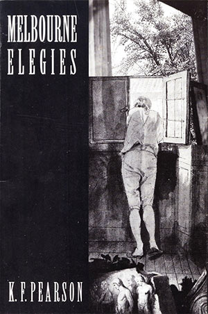

|
|


Melbourne Elegies : K.F. Pearson
{kind=link}

{kind=link}
...a
well-nigh perfect amalgam
it is Pearson’s wide-angle view of Melbourne, plus the sudden zoom lens and narrow focus, that goes on echoing in the mind. Brian Coghlan, Sidewalk ...Pearson is a complex figure and has in these Melbourne
Elegies
produced an equally complex text....
Edward Reilly, Geelong Advertiser |
||||||
Book Description
Melbourne
Elegies being an adaptation and
extension of Goethe’s
Römische Elegien is K.F. Pearson’s sixth
collection. The sensibility is fascinating, with the shadow of the
German poet in Melbourne. ‘A
work in that tradition of modern verse
translation where the poet also translates cities and times’, a homage
both to Goethe’s Roman
Elegies
and to Melbourne. The German poet's discovery of 18th century Rome and
of erotic love are re-mapped in a rediscovery of Melbourne after a long
absence. Pearson’s
inner city is alive with characters, observations
and bars, although ‘it’s all thin as smoke compared to my
knowing you’.
It’s a very sexy book;
hardly anyone is
willing to be tender about another person. There is nothing like it in
Australian poetry.
ISBN 1876044241Published 1999
62 pgs
Book Sample
Southbank
If bluestone would just speak out and terrace house offer something.
If streets would spare a
word and
genius of locale stir.
Yes, I know that everything is alive within your tram-fed boundaries,liveable city Melbourne,
but that’s all
muffled for me yet.
At what café can I expect to recognize the creaturely
one who’ll burn
and re-awake me, who’ll whisper things to me?
I cannot yet perceive the way or road that I will travel,
day in, day
out to her and back while precious time slips by.
Here I am considering the Yarra and Gallery; and considering a
chardonnay:a deliberate man who is
doing the
sensible thing with his time.
But this ennui will shortly pass and then there’ll be only one focus:
there in your willing
sight I’ll have
undivided attention.
Melbourne, you’re certainly all my world but without love, well,
the world would be no world, nor even Melbourne be Melbourne.
Ms
Ania Walwicz’ Cat
Suddenly the unexpected illness of a cat has altered Melbourne.
Though it was Herr von
Boopee, not an
ordinary cat
but that of Ms Ania
Walwicz, a radical stylist herself.So it shouldn’t
surprise black Mr
Boopee chose his time.
He needed to consult his vet exactly when I could have wished.
Writerly poor Ania begged
a friend’s
Escort as ambulance
and as reward brought her along to an event that I was at,the Ideas
Counsel launch of their Poems-on-Trams promotion.
Knowing only Ania, I stood and talked to both of them
in the early evening at
Sambucca’s Bar
in Fitzroy.
The plane of her
friend’s right cheek held all May’s declining light.And I’d have to
wait a day and a half
before the risk of my asking her
out.
Comparable
City
Kenneth Davidson’s critical eye, sane on economy in The Age,
trams, the
“W” class or the padded-seat
sleeker new models,
access, facilities and atmosphere at the big-circle MCG,
a great public
sculpture outside, crisp lines of Daryl Jackson’s southern
stand,
gardens, Fitzroy, Exhibition, havens for night-rutting possums,
the Yarra bank of the
cyclists,
restaurants affordable to poets,
Tandberg and Petty and Leunig, Spooner and Tanner in form,
(Kernahan at centre half
forward),
Melbourne can offer some things.
But none can approach when we, who have our arrangement to meet,
find it honoured, not in
the lapse, but
quickly in the act.
Crossing
The Yarra
The luck that I’ve profited by’s more beautiful than I suspected;
re-quickened desire took
me along past
all South Yarra.
What goes on, behind brocaded drapes, in a new- or old-rich house
everyone knows about, and
I have learnt
of it myself.
Call me
shortsighted, uncivil and a fool, but I know this:really intelligent desire
is a never
corruptible good.
Those upper-middle facades couldn’t tempt me a moment;
nor could wrought-iron
balconies or
serious paved courtyards.
I crossed north of the river, alert, or relaxed and intent,
instinctively knowing the
tram stop,
environs of where I should be.
Like one who commissions a mosaic, here all now has fallen in place,and I for a sense of
completion, fill
in the last shapes myself.
She is the designer, our love the work. What more can preserved Renoufs,
or the statuesque Elles,
give to their
lovers than this?
Corporate
Boxes, Society Balls and Casinos, the Porsche and Lamborghini,things which often rob
loving of
opportune time!
Ornament and
affectation always sicken me, and doesn’t a willing dressgive, in the end, as well
as imported
designer gear? A lover,
intends a convenient mode, and doesn’t he desire adroitly toset free her hidden
breasts, already,
from all decoration?
And who wants the coathanger as pimp? Mustn’t all coiffure and pretension
altogether descend before
he can freely
feel her loveliness?
But we are closer than that.When my lover is
desired her outer
and under clothing falls,
like mine,
in folds to the floor.
Ready, and showing my readiness, I hurriedly lead her over,
still perhaps in her bra,
and happily
onto the bed.
There, without a
silken curtain or an embroidered coverlet,it stands, comfortable for
two, free in
the skylit room.
No Prime Minister flush in his new aphrodisiac of power
approaches near
completions we take once or more.
The joy, the real naked loving, daily enlightens us.
And at night the
rocking bed’s lovely creaky tone.
Reviews
Melbourne Elegies, Bread, Russian Ink, The Dining Car Scene
Brian Edwards
Mattoid, No. 55, 2006
Like Goethe’s Romische Elegien, the literary model to which they refer, K.F. Pearson’s Melbourne Elegies are as much about thinking and writing as they are about place and sensual experience. Part of this thinking involves acknowledgement of predecessors, the thickly layered literary history that includes not only Goethe’s splendid excitement with late eighteenth-century Rome but also, as Goethe acknowledges in his elegies, such classical exponents of the form as Catullus, Tibullus and Propertius. In the classical period, the elegy was a lyric that often dealt with death or with tragic experience; but it might also address war, politics or love. Amongst the most influential versions from the twentieth century, Rilke’s Duino Elegies offers powerful variations in form and material, variations used to great effect in a Canadian version Kerrisdale Elegies (1984) by that country’s recently appointed Poet Laureate, George Bowering.
Pearson’s elegies present an enthusiastic rediscovery of Melbourne and joy in a new relationship. Modulated so variously throughout these poems, the two subjects are addressed very neatly in ‘Elegist to Reader’ which is located judiciously near the end of the sequence. The first-person confidential manner is both disarming and inviting, in ways that characterise the whole collection:
And I’m not as young
as I once was, nor lonely:
I don’t carve initials with a pocketknife on poles.
But I confide in these Australian hexameter lines:
She gratifies me by day, she benefits me at night.
I have seen her tend her orchids or decorate a room,
or speak invented cat-talk with a cat,
or her understanding comfort a friend in deep distress,
or be elegant in an op-shop number.
So too are these limber elegies a second remove.
Like a phonecall instead of a personal visit,
they bring to you, Melburnians, intelligent knowledge
of intimacy, and public light on brick.
I don’t carve initials with a pocketknife on poles.
But I confide in these Australian hexameter lines:
She gratifies me by day, she benefits me at night.
I have seen her tend her orchids or decorate a room,
or speak invented cat-talk with a cat,
or her understanding comfort a friend in deep distress,
or be elegant in an op-shop number.
So too are these limber elegies a second remove.
Like a phonecall instead of a personal visit,
they bring to you, Melburnians, intelligent knowledge
of intimacy, and public light on brick.
There is a generosity of spirit, and warmth, in these poems, based in the human need for connection. Amidst such markers of Melbourne culture as the street names, restaurants, pubs (the Duke of Wellington and the Provincial), the Yarra, Merri Creek, football and the Comedy Festival, Pearson’s construction of a relationship is effectively tender and bold, sensitive to the comfort of sharing and explicit about the exhilaration of sexual acts. As the opening poem, ‘Southbank,’ concludes: ‘Melbourne, you’re certainly all my world but without / love, well, / the world would be no world, nor even Melbourne be / Melbourne.’
So the elation of daytime belonging on Brunswick Street is extended by night desire and the rich text of a lover’s breasts, her thighs. Memories of childhood yabbying at the Caulfield Racecourse pond, of ‘glib art-talk and overseas-borrowed theories,’ or of street crowds, local rituals and pub communication can all be repositioned through delight in her. In this historically cumulative and multicultural Melbourne many resurrections are possible. They include, of course, the poet’s tribute to Goethe translated now into a contemporary city so far, in time and space, from Goethe’s Rome (or Weimar), and so near.
...These are interesting collections. Black Pepper continues to present writing that warrants attention.
Two Very Different ‘Melbourne’ Dreamings
Paul Cliff
Ulitarra, No.17/18, July 2000
Two books [Alex Skovron, Infinite City: 100 sonnetinas, K.F. Pearson, Melbourne Elegies] from Melbourne-based poets present two very different ‘cities’, though with an unexpected resonance...
As a Melbourne-based poet, Skovron has concocted a largely ‘detached,’ conceptual and metaphysical city, with little specifically tangible of Melbourne itself. The opposite approach is taken by his co-citydweller K.F. Pearson who, in his sixth collection, Melbourne Elegies, positively seeks out and delights in the city’s physical specifics. (The book indicates Pearson to be a principal of the lively Fitzroy-based Black Pepper press, whose numerous publications, listed at the back of the book, include Jordie Albiston’s well-received The Hanging of Jean Lee.) As advised by the collection title, Pearson’s departure point is the ‘Eternal City’, Rome - or rather Goethe’s eighteenth-century rendition of same in his Roman Elegies. As against Skovron’s imposed ‘fractalisation’, there is less multiplicity of voice in Pearson’s sequence - though still a striking stretch of tone. According to Hugh Tolhurst’s Introduction, the genesis of the work lay in Pearson’s finding (after a number of years publishing translations of Goethe’s Roman Elegies) that his return from Adelaide to his native Melbourne held resonance with ‘the great German poet’s [own] discovery of Rome’. The poet is constructed as ‘dreaming a personal portrait of the city where he lives’ - with some poems in the series being close translations of Goethe’s originals, some mixing Pearson’s and Goethe’s voices, arid others again being completely new, ‘non-Goethian’ additions or departures. In total, Pearson makes 40 elegies, compared to Goethe’s original 20.
The sequence, in which rhyme is rigidly eschewed, ranges from childhood remembrances of yabbying with his mother’s colander in the pond at Caulfield Racecourse (‘Yabbies’), to relaying an anti-gambling pronouncement by the city’s head Anglican cleric (‘Archbishop Rayner’s Prayer’). Along the way it incorporates references to the city’s tradition of great editorial cartoonists (Leunig, Tanner, Spooner...), ‘Ms Ania Walwicz’s Cat’, and the Melbourne Comedy Festival. Frequently (as in ‘The Sun, Like Arthur Boyd’), the Melbourne detail and vernacular mode is hitched to a bigger, more formal, declamatory and oratorical mode apparently echoing Goethe’s original: ‘Already I regard / St Georges, Brunswick and Johnson streets as my spirit places. / Oh, god, tolerate me here! Cruel time will lead me later, / in a miserable cortege, down to a final place’. Admittedly I haven’t read the Goethe original, but Pearson’s collection seemed to gather momentum nicely as I proceeded. The range mixes introspection (as son, or lover) with more direct, public invocations to the poet’s fellow cityfolk, and at some points the evocation is emphatically sensual. (Although, as I say again, I haven’t read the Goethian model, I’d hazard a guess that Pearson’s evocation of the beloved in ‘Green Grocer’ - ‘your clit upon my finger... / entering you from behind... your welcome lovely closure round my cock’ - doesn’t religiously follow the master’s own tone.) There is also the effective transition from the lyrical to the physical in ‘The Kimono’, with its refrain: ‘you move in silk like fishes do in water’, crossing to the unexpected evocation: ‘And he followed fish. And he kissed her matutinal cunt’. There is a nice modern playfulness across the series - in titles (‘Artist With Formguide And Papaya’), or the odd, sometimes ‘beat-ish’ line: ‘console me, tungsten, thin ambassador of the night’ (‘Lamplight’).
Whitman’s New York is of course an earlier contriving of the metropolitan metaphor, and the great Manhattan cityman seems to nudge in at points in both Skovron’s and Pearson’s sequences. (In the conception of Skovron’s universal ‘singer’ in ‘Credo’; and more directly in the tone of Pearson’s ‘Jury Duty’: ‘Nor you, my intimate juror, whom I debrief at the end of the day. / If I had never before, I would love you extremely from now’.) And finally, for all the vast difference of technique and intent, Pearson’s sequence closes in a way oddly empathic with Skovron’s, both poets toying with the metropolis’s - or Life’s - protean nature, and the issue of its ultimate meaning or unity. Pearson’s romantic invocation in his closing poem, ‘Prayer’ (‘Melbourne provide us with friends, arms still of those whom we care for. // At the closure of life, yours or mine, make certain the whelming of love / remains at its apex of flow, revolving the ball of the world’) is not unreachably distant from the life-affirmative spirit of Skovron’s penultimate poem, ‘Credo’: ‘And I really do believe in such a thing / As purity of heart... / I want to sing / The simultaneous truth of truth and illusion; / The city’s endlessness, the soul’s profusion’.
Melbourne Elegies
Charlotte Jones
Cordite, No. 6-7, 2000 (pg. 32)
Having recently been on a trip to Melbourne K.F. Pearson’s poetry serves as a more poignant evocation of those few days than the photos we forgot to take. A camera can often be a rough and clumsy tool with which to record experience. In the amateur’s hands it all too often creates cliché, reproduces the familiar and safe. Or worse, serves as some kind of lingering colonial impetus, the need to stamp ourselves on landscape, a frozen proof that we have, indeed, been there, done that. K.F. Pearson’s Melbourne Elegies, on the other hand, pays homage to the city through a very personal and original lens.
I’m fully elated now,
inspirited on Brunswick Street;
I’m captivated by articulate past and present here,
now that I follow my bent, and go through the works of the old
poets with eager hand, daily with original pleasure.
I’m captivated by articulate past and present here,
now that I follow my bent, and go through the works of the old
poets with eager hand, daily with original pleasure.
So begins ‘Unemployment And Its Friends’, a joyous celebration of alternative culture, alternative experience. Pearson suggests this unprescribed way of living allows for greater learning experiences, specifically an intense awareness of the sensual. The artistic, intellectual pleasure of taking in the words of poets by day is transferred to the heady pleasures of flesh by night. Learning is a continuum, an experience that cannot be broken into discrete entities frames (to hark back to the metaphor of photography).
Pearson’s poems repeatedly move from the political to the personal. ‘Crossing The Yarra’ questions the wisdom of a life dedicated to material wealth. Pearson suggests that love is purer in the absence of material distractions because there is no pretty wrapping paper to sustain illusion; ‘Corporate Boxes, Society Balls and Casinos, the Porsche and Lamborghini’. ‘Portsea and South of The Yarra’ revisits this territory, moving from a rejection of the showy (equated with the false) to embracing the restorative healing power of love.
Pearson is at his best when tackling the personal and this he does in ‘Ms Ania Walwicz’s Cat’. It is a small tableau of a poem that begins with a potentially banal experience (the illness of a cat) and ends with the awakening desire in a Fitzroy bar. The success of this poem lies in its simplicity. It does not seek to cover the whole gamut of politics and social ills that Pearson attempts in other pieces. Woven into the narrative of the sick cat and the meeting between Pearson and the unamed friend of Ania’s is the idea of community and friendship. The reward for helping another out is the possibility of new friendships and ultimately love. The friend’s deed has made her literally glow, ‘The plane of her friend’s right cheek held all May’s declining light’ which is immediately translated into desire by Pearson.
While Pearson could be accused of sentimentality and occasional wordiness at times, it is hard to deny his deep seated attachment to his subject matter: Melbourne and the curious eclectic whirr of Melburnian life.
Now and forever, at mornings or
in the evenings, in the
long times
let us reach like our ferns in their canopied shade for the light
long times
let us reach like our ferns in their canopied shade for the light
‘Prayer’
In the final poem of Melbourne Elegies, ‘Prayer’, KF Pearson makes an emotional appeal to his reader to celebrate and hold sacred love’s bonds. Melbourne is attributed with providing a community in which this is possible for those prepared to make the life long commitment.
At the closure of life, yours
and mine, make certain the
whelming of love
remains at its apex of flow, revolving the ball of the world.
whelming of love
remains at its apex of flow, revolving the ball of the world.
‘Prayer’
Echoes of the object of affection
K.F. Pearson, Melbourne Elegies
Bev Braune
Antipodes, Vol. 13, No. 2, December 1999
If we are to judge K.F. Pearson’s Melbourne Elegies as a translation and ‘extension’ of Johann von Goethe’s Romische Elegies it will not enlighten us to love Goethe’s 24 elegies, which the German poet wrote between 1788 and 1790 to a widow with whom he had an affair while in Rome. It may be best to regard the collection, as Pearson tells us, where ‘translators find an echoed life, then theirs’ (61). It does not serve the reader well to compare Pearson with Goethe except by a Wittgenstinian resemblance in the way that Pearson has indicated. In a stricter comparison we will find ourselves overwhelmed by a lack of exacting claims regarding a sensitivity with language to which Goethe held.
J.B. Leishman and Stephen Spender’s translation of Rilke’s Duino Elegies (1975), elegies which were sent by Rilke to Princess von Thurm und Taxis, demonstrates that translation from the difficult German language is neither necessarily unchartable nor unsatisfying for the reader in English. Perhaps Pearson’s translation is held back by an uncomfortable mixture of the colloquial and classical that renders his remaking of Romische Elegies in Melbourne problematic, and creates the difficulties in Melbourne Elegies in poems such as ‘Lamplight’, ‘Unemployment and Its Friends’, and ‘Portsea and South of the Yarra.’ In telling us how he finds his life in the echoed life, does Pearson tell us too much or too little? Or both? His timing makes it difficult to follow either quarrel as a distinctive distraction over the other, as in ‘Late Arrival’.
On the one hand Pearson seems to be ‘representing’ encounters with his lover while on the other he ‘presents’ Goethe’s elegies, which were about Goethe’s lover. There should not be any difficulty in this, as philosopher Vincent Tomas has argued, because the creative work is an embodiment of expressive qualities that make it tricky for readers to distinguish between the two when speaking of their emotional response to the work. But it seems that Pearson is caught between the two, if that is possible.
Melbourne Elegies is an intriguing collection of poetry for this very reason. We find ourselves searching with the poet for an illusive, late, or anxious object of his love. She remains strangely insubstantial, considering the hold she has on him. It seems that Pearson is embracing an erotic figure of the mind rather than Goethe’s compelling ‘Faustina’. Not all of Melbourne Elegies falls into this category, for poems such as ‘A Roll Call’ and ‘Green Grocers’ stand out in their striking passion.
It is in ‘On the Death of His Mother’ that a female figure comes to life and brings us back to Pearson’s statement that the life found (Goethe’s) is merely an echo, while his (Pearson’s) is the real. Poems that focus on what is sensuous in Melbourne (‘Green Grocers’) also succeed in bringing to life some aspects of the poet’s framing. Most seem to remain hampered by the ‘echo’, not quite finding their footing in embodying the object and subject as a whole picture...
Echoes are also the concern of Ouyang Yu, a poet in search of his place in the whole picture in Songs of the Last Chinese Poet... Songs of the Last Chinese Poet discovers the abandonment of the sublime. Landscape does not reveal what is hidden so much as require to be upturned, while Melbourne Elegies attempts to elevate clandestine encounters in a pub to that of sublime self-revelation. Ironically, Pearson and Yu, both writing out of Melbourne, attain similar conclusions - that of contemporary man’s aiming to control the uncontrollable, self-impaled on desire.
Earth has not anything to show more fair: songs of the city
Melbourne Elegies
Brian Coghlan
Sidewalk, No. 3, August 1999
There are cities and, of course, cities. Wordsworth thought there was nothing like a view from the bridge: London on a nice fine morning. Proust’s vision of Paris is a mosaic of multiform moments and fleeting impressions. Robert Musil had no particular affection for imperial Vienna. But his evocation of it transcends systems, regimes, language and culture. With Lubeck and Danzig Thomas Mann and Gunter Grass created myths which are simultaneously concrete, real and lasting; but they also give us the quintessence, ageless aura and piling up of the accumulated past. In some ways such myths of the city become more real than the passing view or ephemeral experience of both resident and visitor. In yet other ways we may be disappointed or at least disenchanted when, say, Alexandria in the here and now fails to live up to or equate with Cavafy’s stereoscopic vision of the city.
Not that the myth of the city, any of them, has the function of gilding the lily or touching up the picture. Lawrence Durrell’s myth of Alexandria is full of beauty, true; but also of corruption, decay, foul smells and fouler practices. Perhaps Hugo von Hofmannsthal was quite near the target when he said that Rome in rottenness and decline was still full of unrealised possibilities. A good poet, or so one might think, can catch these myriad possibilities, sensations, habits and happenings: all suspended, recalling Neville Cardus’ wonderful phrase, in the magic hour-glass at noon.
With Melbourne Elegies, then, K.F. Pearson is in stellar company. But he has at least two things going for him before he starts: first - a self-deprecating and ironically humorous perspective on all and sundry, beginning with himself. For while these poems are self-styled ‘elegies’ there is absolutely nothing in them of the conventionally elegiac. Not, at least, as far as this reviewer, who is inclined to luxuriate in soft-focus melancholy, can discern. And then: as Sancho Panza, while Don Pearson wrestles Melbourne down onto the dissecting table, he has Johann Wolfgang von Goethe. Only with difficulty, and writing as a superannuated Germanist, do I restrain myself from writing simply ‘Goethe himself’. For Goethe has a place in German literature which has no equivalent elsewhere. It was, again, Hofmannsthal who observed: ‘We have no literature; we’ve got Goethe and a lot of little buds.’
But Goethe and - not Frankfurt his birthplace; not Weimar, ‘Court of the Muses’ and Goethe’s home for fifty-seven years - Rome? For Pearson unequivocally adapts and extends Goethe’s Romische Elegien. In order to understand Pearson aright and also, I think, to do him justice, the story is worth telling. For it has a certain exemplary quality which, as time grinds on, one takes more and more to heart. As, evidently, does Pearson: ‘And I’m not as young as I was, nor lonely:...’
In 1786 Goethe’s legendary youth was well and truly behind him. At thirty-seven he seems to have been thinking ‘What if all be error?’ At twenty-five, with Werther, he had become celebrated throughout Europe; and a rather dubious role model as well. His early poetry, most notably that recording his ‘Strassburg idyll’, had re-created German as a poetic language. Now, ten years on, ten years as minister-for-everything at the ducal court in Weimar, he was finding good manners and behaviour ‘comme il faut’ rather trying. His affairs with the aristocratic Frau von Stein - was it sex, was it spirit? - was terribly worthy; but, to libido and spirit alike, increasingly stultifying.
At all events, and greatly to the scandalised reaction of the court, the great Goethe simply broke out. Telling nobody he simply upped and went. South to Austria, over the Brenner, down into Italy, to Rome, Naples, Sicily and back to Rome. In Rome, particularly, he thawed out. Of course: the cynic in one’s psyche, plus, doubtless, the monstrous regiment of women, says simply: midlife crisis; Goethe off with the birds and the bees; beads and bangles and the old ‘Sturm und Drang’ gear taken out of mothballs. Yes of course.
But there was more to it than that; there often is. In Italy Goethe was seeking, and actually thought he had found, some kind of ideal synthesis between flesh and spirit. To what extent his nightly revelatory adventures with ‘Faustinia’, a young and eager Roman widow, are hard fact doesn’t really matter much; any more than his intense and fairly well documented liaison in Milan on the way home. One thing is certain: the classical world - he was always seeing ancient and imperial Rome behind the present-day façade; it was, after all, Gibbon’s era too - gave him new life. Moreover, he came home mid-year 1788, resolved to put his old well-mannered, emotionally constricted life behind him. Clearly what a Marxist critic long ago called the ‘stifling petit-bourgeois climate of the Weimar court’ was not conducive to Goethe’s projected change-of-life. But, as Dickens says somewhere, ‘a man might try’.
And Goethe did. He did two things. The order in which he did them doesn’t really matter. Christiane Vulpius was the sister of a man who wanted something from Goethe. Again the details don’t matter here. Goethe seem: to have been entranced. Christiane was beautiful - or at least pretty - straightforward, sensual and trusting: Goethe saw her as a child of nature She joined him in his house, first as partner and then, much later, as his wife. Quite obviously, and Goethe knew this, he was trying to repeat, re-run, his Roman idyll. His devotion to Christiane and hers to him is remainingly touching; and more than that.
At the same time all this was happening Goethe wrote the Römische Elegian/Roman Elegies. I suppose one might say it was emotion recollected in tranquillity; except that in his case the present emotion went on and on. You can imagine the scandal. The chit-chat became legendary: from the grand Duke, Goethe’s friend, to the affronted ladies of the court, from the Herders to Schiller’s wife... everyone had an opinion. But Goethe was, after all, Goethe; and he survived it. So, no less to the point, did Christiane. So: Goethe’s retrospective view of Rome, but presented as a sentient present-day continuum, is a well-nigh perfect amalgam in which a classical cultural perspective, sensual intensity and a nicely sceptical self-irony hold a rather precarious balance.
But ‘precarious balance’ is the story of Goethe’s life. He was still trying to get his diverse facets, claims and urges together when, with the Marienbader Elegie in 1822, he finally decided to ‘put the tools away’, as a plain-spoken English critic put it. He gave up girls but had no difficulty writing a lot more poetry... Pearson is thus on sure and well-trodden ground; and he knows how to take best advantage of the fact. The framework of the Römische Elegian constantly peers through his text; wryly, appraisingly, relativising it all:
I
cannot yet perceive the way or road that I will travel,
day in, day out to her and back while precious time
slips by.
day in, day out to her and back while precious time
slips by.
Pearson’s ability to fuse outside panorama, the day’s diet of sights and sounds, meaningful, trivial or irrelevant, which makes up all our days - is balanced, sometimes indeed overborne, by his love: love straight, sensual and wholly open. And why, of course, shouldn’t it triumph over all? There is, at one and the same time, something fine, frank and happily middle-aged about his love. ‘I love you with the red glow of age’, says Paul Hindemith’s Mathias the Painter, [Paul Hindemith (1895-1963), Mathis der Maler (Mathis the painter), Opera in Seven Pictures (1935)] and is able simultaneously to stand outside himself. Pearson is very close indeed to Goethe when he says:
We’re
not even always kissing; we often talk sensible talk;
when her sleep comes upon her I lie and contemplate
much;
indeed in her arms I will often make poetry up:
the hexameter measure with fingering hand I gently
tell out on her back. She breathes in her lucid sleep and
her
breath inhabits me down to the depths of my being...
when her sleep comes upon her I lie and contemplate
much;
indeed in her arms I will often make poetry up:
the hexameter measure with fingering hand I gently
tell out on her back. She breathes in her lucid sleep and
her
breath inhabits me down to the depths of my being...
This, of course, is one of Goethe’s most celebrated images: it embodies his longing for passion - and control, content unlimited - and absolute form: the fusion, perhaps, of what Schiller called ‘sentimental’ poetry (himself) and ‘naive’ poetry (Goethe).
Pearson, though, is probably to be preferred when he lazily watches his risen love re-kindling the morning fire. Here concrete reality and timeless symbol become one.
Pearson’s Melbourne is part impressionism, part pointilliste-precision, part panorama. Some images are apt, resonant and wholly unforgettable:
Awful
governments legislate budget cuts throughout the
night.
Platypus, good nocturnals, forage as they’re wont to do.
A Master Builder dreams a tower to frighten Qantas off its
path.
We, second storey, wake beside green leaves on a ginko
tree.
night.
Platypus, good nocturnals, forage as they’re wont to do.
A Master Builder dreams a tower to frighten Qantas off its
path.
We, second storey, wake beside green leaves on a ginko
tree.
There is barely - but finely - controlled passion and moral rage in ‘John Cargher’s Singers of Renown’. Here Pearson captures not so much the daily round as the common lot. Perhaps this too is an insight that comes only with the bitter reality of middle-age:
I
know it is difficult for us to preserve our good name
when detractors bring us rumours from our past,
the spending spree when manic or double cross of a
friend.
These are old histories, and never told in full.
when detractors bring us rumours from our past,
the spending spree when manic or double cross of a
friend.
These are old histories, and never told in full.
But Pearson’s clear-eyed realism and frankness never give way to gloom, nor to that luxurious seduction of the ageing: self-pity. His evocation, on her death, of his mother encapsulates a whole epoch. His recollection of the ‘Brownlow Medal of sausage rolls’ rang the bell with this reviewer who in another existence was a permanently bedraggled and disappointed supporter of Aston Villa.
I think, in brief, it is Pearson’s wide-angle view of Melbourne, plus the sudden zoom lens and narrow focus, that goes on echoing in the mind. Inevitably I find myself comparing and seeking equivalents. Bruce Dawe is a possibility; so too, I suppose, is Les Murray, though Pearson is without the rather aggressive sense of rectitude that I, at any rate, detect in our unofficial laureate. But perhaps that’s only because I’m a Catholic too...
In any case though: looking for comparisons on the Australian highway might be a bit of a cul-de-sac. I think it could be more productive to see Pearson in the same sort of civic contexts as, say, Cavafy, Brecht in Berlin, or particularly Josef Weinheber (1892-1945). Weinheber’s star is presently in eclipse; his spiritual proximity to the Nazi ethos, and subsequent suicide, have always made it difficult to see him untrammelled. But his Vienna poems, Wein wörtlich (1935) are unique in their multi-perspective view of the city. Weinheber veers unpredictably and with total conviction between nostalgia, homesickness, playfulness and parody. And he has his own ‘voice’. Hofmannsthal, another incurable if also very critical Viennese, observed that a dialect doesn’t give you another language, but it can give you a voice of your own. This is Weinheber. This, I think, is Pearson.
I should like to hear him reading, unselfconsciously intoning these verses. I once heard Henry Krips give a full-length reading of Weinheber’s poetry. Henry, of course, was a total ‘Weiner’, unblemished, unrepentant (why should he be?) and deeply soaked in Viennese Kultur ancient and modern. [Henry Krips (1912-1986) was for many years (1949-73) conductor of the Adelaide (at that time ‘South Australian’) Symphony Orchestra.] As he read Weinheber you heard the voice of the city, the over- and undertones, the colours and habits and sibboleths, the big horizon and the backyard bigot. Vienna, for better or for worse - very much the better where I am concerned - has never been, or at least seemed, the same since.
I think, in sum: Pearson has his own ‘voice’ in Melbourne Elegies and one wants to hear it again and often. I don’t think poetry has given me so much sheer pleasure since I discovered Ulla Hahn. But that is another story.
Urbane Poetry
Martin Harrison
Australian Book Review, No. 211; 1999
The problem with K.F. Pearson’s Melbourne Elegies is that Goethe - on whose classic of sex-tourism, Roman Elegies 1788-1790, these rhetorical, literary poems are loosely based - is Goethe: difficult to translate, still little read in English. It gives him problems. Pearson, to my mind, is not attempting a Poundian ‘replacement’ of an ancient text within the framework of a contemporary poetics. That would require a reckoning with the original poem’s logistics and context similar to the way that Pound’s Propertius speak electrifyingly in the context of an Empire much later than the Roman one he wrote for; or in the manner that Christopher Logue has recently converted excerpts of Homer into a form of late 20th century literary cinema. Such replacement requires that the contemporary poem convince us that the original work’s ‘loss’ - a ‘loss’ produced equally by its inaccessible aesthetic no less than by our contemporary lack of language-skill and culture - should matter to us.
Pearson, however, nowhere tries to persuade us that we need Goethe or indeed need the Roman Elegies’ signal achievement-their re-location of classical measure, classical myth and classical amorality in the minds of the then contemporary German audience. Pearson’s aim is to convince us, rather, that we need a wine-drinking, amorous, humane, Melbourne-based Pearson - all written up via the writer’s urbane, somewhat unusual enthusiasm (very Melbourne) for Goethe’s poetry.
Melbourne Elegies is, in other words, that most ancient of poem-forms, pastiche. But how - if you have surrendered a larger critical logic, if, that is, you have no equivalent to Pound’s, Lowell’s, Zukofsky’s, Logue’s critically motivated form of updating - do you effectively pastiche an exquisite, remote, still lively yet decidedly foreign poem? All too often in Melbourne Elegies where Pearson attempts a literal transcription (Goethe’s ‘Sehe mit fühlendem Aug’, fühle mit sehender Hand’ / ‘see with a sentient eye and feel with perceptive hand’- Pearson) the talkative economy of Goethe’s acquired ‘classicism’ is turned into standard ‘translatese’. Likewise a variation like ‘I’m really elated now, inspirited on Brunswick Street’ (Pearson) is neither good Goethe (it is the rather famous ‘nun auf klassiscbem Boden begeistert’) nor good bathos. Inspirited? Worse, lines like ‘In the morning she will languorously leave our passionate bed’ or ‘Though its elasticity were (sic) going the fireside couch was quite hypnotic’ or ‘And he kissed her matutinal cunt’ are neither Goethean nor poetry.
It’s a pity. I’m no supporter of Poundian methods. A poem which drew expertly on Pearson’s skills as a poet and his knowledge of Goethe (many of these poems started off as more than adequate translations) would be a marvellous thing. Melbourne Elegies, however, all too often literalises the tone of Goethe into a persona-voice which is at once intimate and fulsomely artificial, erotic yet verbose. Pearson seems stuck with it - overshadowed by Goethe, ventriloquising his metres - but unable to do more than gesture (in ‘Miss Ania Walwicz’s Cat’ or perhaps ‘Elegist to Reader’) at Goethe’s Latin models. But Goethe’s poem is full of darkness and ironies - the elegy on syphilis, for instance, the final elegies about going public and abandoning his love. And he has what his Latin originals outstandingly have - a sense of the metrical instant, a sense of vivacity in time and of its brevity. (It’s all said in Zukofsky’s ‘Peri Poietikes’: ‘Look in your own ear and read.’) Mainly long, often very long ‘happy’ moments capture Pearson’s attention: robust sex (straight), lots of undressing and clit, Jeff Kennett hate-sessions. Melbourne’s clearly a better place than Rome. Doubly malign, then, the goddess Typo who even there inspires ‘In Memorium’ (Sic) as the title of one the poems.
Melbourne stories told in verse
Melbourne Elegies - Melbourne as a Palace of Love
Edward Reilly
Geelong Advertiser, March 1999
In his mid-thirties, that wondrous poet and man of letters, Wolfgang von Goethe, fled the ‘truebe... und schwer’ heavens of the Germanic North for the clear light of the classic lands. The Roemischen Elegien sing of his delight in the sheer sensuality of life and his sense of liberation on reaching the ancient city of Rome.
Goethe treats of many subjects, seeing Rome as the Temple of Love, the ultimate goal of the Wanderer’s travails, and recapitulates a number of well-chosen classical myths and using them for his own ends. This is a poetry of the highest order, and has been taken as a model by Pearson in this book. Kevin Pearson is a complex figure and has in these Melbourne Elegies produced an equally complex text, using Goethe’s poems, which Pearson had previously translated and published in journals such as Southerly and Quadrant.
Pearson had barely escaped with his life when a mysterious and malevolent fire in Adelaide had destroyed his collections of poetry and music. He then returned to Melbourne in 1992. Just as Goethe saw classical Rome in the double light of classical myth and his personal eroticism, he found in his native city the locus for a redeveloped creativity. But, given the displacements of time and space between Eighteenth Century Rome and contemporary Melbourne, there are differences to be expected and encountered.
Beginning with ‘Southbank’, the poet invokes the occurrence of ‘bluestone’, ‘terrace house’ and ‘café’, each of which go to define Melbourne’s ‘liveable’ atmosphere. Pearson’s satirical sense is evident from this point, for where Goethe had invoked Rome’s historied ‘Steine’ and ‘Palaeste’, Melbourne is far more commonplace. Moreover, where Goethe enthusiastically sees his Rome as ‘Amors Tempel’, our contemporary poet is stricken oddly .enough with an undefinable ‘ennui’ whilst ‘considering the Yarra and Gallery; and / considering a chardonnay’. What he’s waiting for is ‘love’, as to be concretized in an unnamed woman. The realization that without love, as Pearson rightly notes, ‘the world would be no world, nor even Melbourne be/Melbourne’.
In ‘Crossing the Yarra’, Pearson extends his view of Melbourne as a city of love, his tone now quite Ovidian, unashamedly celebrating the power that this love has brought his poetry. His ideal palace of love is to be found in the unfashionable northern suburbs, far away from the ‘Corporate Boxes, Society Balls and Casinos’ of the South Yarra facades.
But these Melbourne Elegies are more than a recapitulation of Goethe’s themes in a present-day setting. Rather, Pearson refreshingly extends the range and style of the poems. He remembers family in ‘On the Death of His Mother’ and ‘My Father My Enemy’, celebrates friends such as John Truscott and digresses on topics such as sport, in ‘Grand Final Week’, and music, in ‘John Cargher’s Singers of Renown’.
The tone and style of Melbourne Elegies is open and breezy. It is a book which can be read easily, mapping out the poems against one’s knowledge of Melbourne’s landmarks. Pearson’s poems are enjoyable in themselves as a celebration of his loves and friendships.
Philip Salom

I’d like to acknowledge the very significant contribution Kevin Pearson has made to publishing in Melbourne, especially for poetry. I’m very pleased, by launching his book, to contribute, however briefly, to that initiative. It’s been a marvelous enterprise... in this era when everyone talks about enterprises and too often means something self-indulgent or downright shady. Could I take the liberty of calling for a round of appreciation?
In the Introduction to this collection I read about incredible dramas - Kevin Pearson enduring fire in Adelaide, making his escape by crawling through a window, then being struck by lightning in Melbourne, and being at the receiving end of gunshots - God, I thought, the things you have to do to be a poet! It made him sound more like Casanova caught in flagrante delicto and paying the price - than Goethe having it off with a young wench in Rome. And then Kevin writing his erotic palimpsests and adaptions.
But then if you study the cover quickly you’ll see what clearly looks like Kevin - the grey hair, the ponytail, the untucked shirt (reading the poems you know why his shirt is untucked) - and he’s just about to scramble through yet another window. Though I must say, before I put my glasses on I hoped it wasn’t Casanova having a diminutive chambermaid from behind (which Byron was wont to do) and doing it in the time-honoured way of European films - bonking with his pants on. Though again there is one poem, at least, which approaches the loved one thus. In direction, I mean, mercifully without pants. Or is that just to satisfy those contrary people who like to read poetry collections from the back to the front?
Actually, of course, it is a famous etching of Goethe - and the Melbourne Elegies are Kevin Pearson’s adaption and extension of the original group of poems by Goethe we know as the Roman Elegies, though they were originally called by the more uplifting Roman Erotica (briefly) and were themselves based on classical models such as the poems of Propertius, Tibullus and Catullus - whose earthiness was commonplace. The actual story of Goethe’s sojourns in Rome carries over to a second collection called simply The Diary, where uplift is what didn’t happen. Yet both of these sequences are about an erotic encounter which finally greatly rejuvenates the poet both sexually and creatively. Goethe called this his ‘renewed puberty’ - they have pills for it now. But it was also an encounter with the city of Rome, the Classical soil, as he called it, a site charged with significance for Goethe and therefore a spiritual renewal too.
In Goethe’s day it was fine for poets to write in contemporary language and style if the subject matter was literary or acceptable but it was difficult if not downright impossible to publish erotic poetry which referred to what the Ancients called ‘union’ unless it was styled in classical form, so Goethe used older models. We can think of A.D. Hope doing something similar in the ’40s and ’50s. In translating or should I say adapting Goethe, Kevin Pearson has written more conventional translations in the past and has shown in The History of Colour written in the late ’80s a liking for the formal and the distanced But in these poems he has laid a newer self on the line: he has taken Goethe’s classical echo of Propertius’s raciness and echoed it back though a vernacular, which is clear in the very deliberate use of slang and easy-going low poetic. The Gods of Rome are just as likely to be Arthur Boyd or the stars of a footie team. He has listened to the original and has written in the spirit of it, but he has added and subtracted when he wished.
And he has the kept the roughly hexameter lines, in long easy measure. And so what do we get? [e.g. pg. 17]
If Goethe’s sequence was based on a real encounter but breaks off, as it were, by his leaving Rome and returning to Germany, Kevin’s erotic encounter and celebration of a city have not finished. He’s still here! And his city of birth, despite the years in Adelaide, was Melbourne, so his arrival was a return, more than a rejuvenation, a more profound thing - a re-discovery. He is now thoroughly... ‘Melbournised’. Now you just can’t say ‘Sydneyised’ or ‘Perthised’ and in the previous K.F.’s case, ‘Adelaideised’? With these gentle and celebratory poems he has relaxed back into this city and his love. I think his belt-line has relaxed a bit, too, since I last saw him in Adelaide! He’s doing well. Talking of words: he is trying for the prize of most original adjective for the genitalia when he calls his beloved warmest morning purse ‘matutinal’ and the more musical pronunciations. It certainly excited one reviewer. But will it catch on?
Those who are tender value, it is said, and those who are tough measure. These are tender poems. And so Kevin, the lover of these poems, of course, while really that all too well-known beast the ‘literary construct’ has all the same closed the gap and reinforced the fullness of the lyric first person, even referring to himself by name. And while Hannah is not named, she is clearly the beloved (or he had better watch out) and actually speaks: [pg. 40]
So these poems are not fictions, they are not symbolic and testosteronal upliftings, and they are not confessional in the sense of worrying away at the neuroses, or the distress, or the deadly. They do not disconcert It is not his kind of art. Nor are they erotic alone, not priapic and theatrical, not determinedly phallic; instead, they have taken the pleasure and play of these manners and relaxed them down to the intimate, the subtle, even the quiet - they are much quieter than Kevin! He also includes several elegies, which he works in by subtle weave and which face on to the sense of mortality the love poems not so much hold at bay as bloody well ignore! But they are there.
It might be thought there are written many such poems, so intimate and personal, but no, not really, and rarely by men. It can appear ‘unseemly’ especially if the man makes clear his openness and his vulnerability . Most people use more distancing, keep the work cooler, hold identification in a more literary and metaphoric frame. Kevin’s poems are not especially metaphorical and this increases their literalness, their being taken as real. And that is to transgress somewhat the safety borders of much art which is available and safe as ‘out there’, as artifice. For this kind of writing (hold book up) men can all too often get the ‘Oh dear’ response, especially from other men. I know, after writing a collection also based in Rome called The Rome Air Naked where Eros also ruled.
This is an honest, wry, loving and fondly literary book which is also quite aware of the larger artifice not only of poetry but also of the making slightly strange through the use of another’s model or style. I recommend it and as Frank O’Hara said long ago, in that, if not classical, then classic era of the ’60s, ‘You’ve got to go on your nerve’. Some of the best advice ever given to poets. Good on you Kevin, may you live, love and write long
.